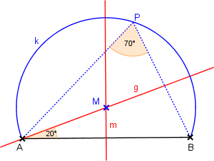
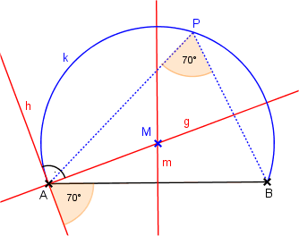

Zwei Konstruktionen zum Ortsbogen 70°
Gesucht ist die Menge aller Punkte P, von denen aus man die Strecke AB unter dem Winkel 70° sieht.
Lösung 1: Mit Peripherie-Zentriwinkelsatz

Bericht:
- Mittelsenkrechte m von AB
- Winkel 90°-70°=20° bei A an AB antragen → Schenkel g
- g ∩ m = {M}
- Bogen k mit Mittelpunkt M über AB ist gesuchte Lösung.
(Für alle Punkte P auf k gilt: ∠APB = 70°)
Lösung 2: Mit Sehnentangentenwinkelsatz

Bericht:
- Mittelsenkrechte m von AB
- Winkel 70° bei A an AB antragen → Schenkel h
- Senkrechte g zu h durch A
- g ∩ m = {M}
- Bogen k mit Mittelpunkt M über AB ist gesuchte Lösung.
(Für alle Punkte P auf k gilt: ∠APB = 70°)